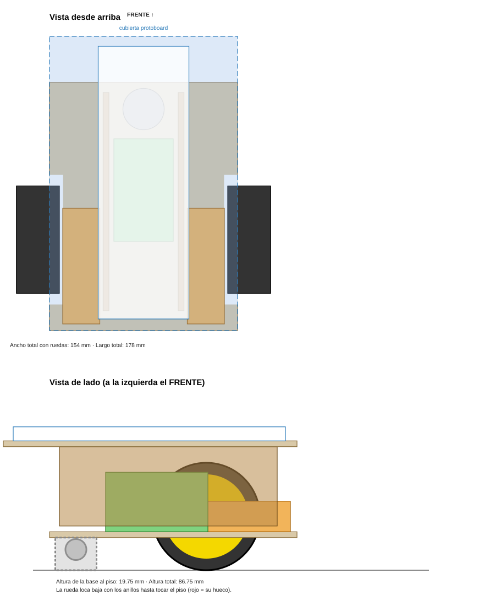
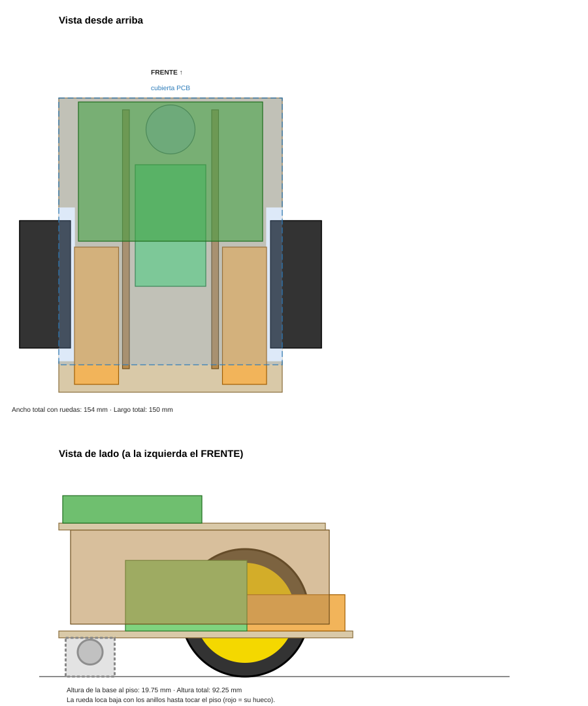
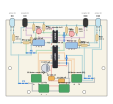

Sistemas Físicos Hipermedia · carrito esquiva obstáculos
Prototipo andando, PCB de una cara por planchado y chasis de cartón desmontable. Circuito: esquema A (sensores IR, LM358, L293D, todo a 6 V con 4×AA).
Cada hoja trae una línea de 100 mm para comprobar la escala antes de cortar o planchar.
| Pieza | Medida que usé | Cómo quedó |
|---|---|---|
| Protoboard | 165 × 55 mm | Es la de 830 puntos (la medida estándar). En la foto se ve más grande por la perspectiva. Confírmala con la regla: largo y ancho. |
| Motor TT con rueda | 70 × 22,5 × 18,5 mm · rueda Ø65 × 26 | Medidas estándar de este motor amarillo. Ya trae el condensador cerámico soldado, así que no hace falta en la PCB. |
| Rueda loca (bolita) | cuerpo Ø25 · bolita ≈ Ø13 | Sale de la foto con la regla. Falta su altura: por eso el chasis usa anillos que se apilan hasta nivelar el carro. |
| Portapilas 4×AA | 62 × 36 × 36 mm | Estimado de las dos fotos (con perspectiva). Mídelo: largo, ancho y alto. |
| L293D / LM358 | DIP-16 / DIP-8 | Se ven los dos con las patas a 2,54 mm. La PCB usa zócalos de 16 y de 8 patas. |
| Emisor y receptor IR | LED de 5 mm | El transparente con tinte azul es el emisor; el negro es el receptor. |
| Interruptor | sin comprar | Las cubiertas traen una ventana de 15 × 10 mm. Cuando lo compres, la ajustas. |
| Cartón | 3,5 mm de grosor | Corrugado de caja normal. Si el tuyo es de 3 mm o de 5 mm, se cambia un número en docs/gen-chasis-carrito.js y se vuelve a generar. |
Dos niveles: abajo van los motores, las pilas y la rueda loca; arriba va la cubierta con la protoboard (prototipo) o con la PCB (versión final). Todo se une por ranuras y pestañas, sin pegante, y las piezas con velcro. Se desarma entero.

Prototipo con protoboard.

Versión final con PCB.
Ancho con ruedas 154 mm. Largo 150 mm (178 mm con la cubierta de la protoboard, que sale 28 mm por delante). Alto unos 87 a 92 mm. Los motores van con el motorcito hacia atrás y las pilas delante del eje, para que el peso quede sobre la rueda loca y el carro no se levante de adelante.
| Pieza | Cant. | Qué es |
|---|---|---|
| 1 · Base | 1 | Lleva los motores, las pilas y la rueda loca. Las muescas de los lados dejan pasar las ruedas. |
| 2A · Cubierta protoboard | 1 | Para el prototipo. Pega dos cartones para que no se doble. |
| 2B · Cubierta PCB | 1 | Para la versión final: 4 agujeros de 3,4 mm para los tornillos M3. |
| 3 · Paredes | 2 | Separan la base de la cubierta (48 mm). Sus pestañas entran en las ranuras. |
| 3 · Anillos | 4 + 1 | Suben o bajan la rueda loca hasta que el carro quede nivelado. |
| 3 · Tacos | 8 | Separan la PCB de la cubierta (de a 2 en cada tornillo). |
| 4 · Soportes de sensor | 2 + 2 | Solo en el prototipo. 2 soportes y 2 tarjetas negras de barrera. |
chasis-plantillas.pdf al 100 % y comprueba que la línea mida 100 mm.Usa la protoboard paso a paso: al tocar un cable o una pata se iluminan todos los puntos de esa conexión, y con "Aislar" ves cada parte del circuito por separado.
No se toca el circuito que ya funciona. Solo se saca de la protoboard el LED emisor y el receptor de cada lado y se llevan, con 4 cables cada uno, a un soporte en la parte de adelante de la base.
| Pieza | Pata | Va al hueco donde estaba en la protoboard |
|---|---|---|
| Emisor IR | larga (ánodo) | el que va a R1 |
| Emisor IR | corta (cátodo) | el que va al negativo |
| Receptor IR | corta | el que va al positivo (+6 V) |
| Receptor IR | larga | el del punto N (con R3 y el LM358) |
| Prueba | Debe pasar | Si no |
|---|---|---|
| Carro en el aire (ruedas sin tocar el piso), mano delante del sensor izquierdo | Se prende el LED rojo izquierdo y se detiene la rueda derecha | Si se detiene la izquierda, los dos cables del sensor van cruzados: cambia las patas 7 y 15 del L293D. |
| Lo mismo con el sensor derecho | Se detiene la rueda izquierda | Igual que arriba. |
| Una rueda gira para atrás | Las dos giran hacia adelante | Invierte los dos cables de ese motor. |
| En el piso, con cartón blanco al frente | Gira y lo esquiva | Gira el potenciómetro del umbral de ese lado; calibra en el lugar donde lo vas a usar. |
| Siempre parado | Anda libre cuando no hay nada delante | Falta barrera, o hay mucha luz (sol, bombillos incandescentes): tápalos y recalibra. |
Placa de 101,6 × 76,2 mm, componentes normales (no SMD), con zócalos para los dos chips y borneras de tornillo para pila, interruptor y motores: todo se puede cambiar sin soldar. Los dos pares de sensores IR van soldados en el borde del frente, acostados y mirando hacia adelante. Hay 5 puentes de alambre (inevitables en una sola cara).

Lado de los componentes. Los puentes son las líneas azules discontinuas.
En la PCB la señal del sensor izquierdo entra al L293D por la pata 2 (en la protoboard entra por la 7), y la pata 7 va a GND. El comportamiento es el mismo (con obstáculo la rueda se detiene), pero el sentido de giro de ese motor queda al revés. Esto hizo que la placa necesitara muchos menos puentes. Si una rueda gira hacia atrás, invierte los dos cables de esa bornera.
| Cant. | Pieza | Dónde |
|---|---|---|
| 2 | Resistencia 220 Ω | R1I, R1D (emisor IR) |
| 4 | Resistencia 1 kΩ | R2I, R2D (LED rojo), R3I, R3D (receptor IR) |
| 2 | Resistencia 10 kΩ | R4I, R4D |
| 2 | Resistencia 47 kΩ | R5I, R5D |
| 2 | Potenciómetro / trimmer de 10 kΩ (3 patas en línea) | P1I, P1D (umbral). Si usas tu potenciómetro doble, va con cables a estos dos grupos de patas. |
| 2 | LED infrarrojo emisor (transparente) | D1I, D1D |
| 2 | Receptor infrarrojo (negro) | D2I, D2D |
| 2 | LED rojo de 5 mm | D3I, D3D (aviso de obstáculo) |
| 1+1 | Zócalo de 16 y de 8 patas · L293D · LM358 | U1 y U2 |
| 1 | Condensador electrolítico 470 µF | C1 (la franja es el −) |
| 2 | Condensador cerámico 100 nF | C2, C3 |
| 4 | Bornera de tornillo de 2 puestos, paso 5,08 mm | J1 pila, J2 interruptor, J3 y J4 motores |
| 5 | Trocitos de cable rígido delgado con forro (≈ 0,5 mm) | Puentes P1 a P5 |
| 4+4 | Tornillos M3 × 12 y tuercas | Fijar la PCB a la cubierta |
| Puente | Une | Largo |
|---|---|---|
| P1 | puente de alambre del negativo (lado izquierdo) | 10,16 mm |
| P2 | puente de alambre del negativo (lado derecho) | 10,16 mm |
| P3 | puente de alambre del positivo (arriba del L293D con abajo) | 10,16 mm |
| P4 | puente de alambre de la salida del comparador derecho al L293D | 10,16 mm |
| P5 | puente de alambre de la salida del comparador izquierdo al L293D | 10,16 mm |
Se sueldan primero, por el lado de los componentes, con cable con forro (pasa por encima de pistas y de otras piezas sin hacer corto).
pcb-cobre-toner.pdf en una impresora láser al 100 %. Papel de revista brillante o papel de transferencia. La hoja ya está lista: no se invierte nada al imprimir. El texto "CARRITO V1" sale al revés a propósito.| Bornera | Conecta |
|---|---|
| J1 | Portapilas: cable rojo en +, negro en −. |
| J2 | Los dos cables del interruptor (no importa cuál va a cuál). |
| J3 | Motor de la rueda DERECHA (el cruce de los sensores está hecho en el circuito). |
| J4 | Motor de la rueda IZQUIERDA. |
Antes de poner los chips en los zócalos, mide con el multímetro que entre el pin 16 del L293D y GND haya 6 V (con el interruptor encendido) y en el pin 8 del LM358 también.
Fijación al chasis: 4 tornillos M3 con dos tacos de cartón por tornillo entre la PCB y la cubierta 2B, para que el cobre no toque el cartón. Si no tienes tornillos, cuatro tacos con velcro también sirven.
Generadores en docs/: gen-chasis-carrito.js, gen-pcb-carrito.js (usa pcb-diseno-carrito.js, pcb-router.js) y este documento gen-guia-carrito-fisico.js. Cambiar una medida y volver a correrlos regenera todo.